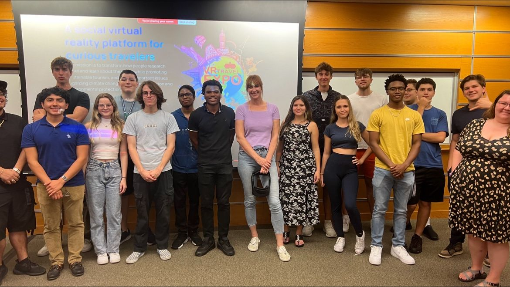
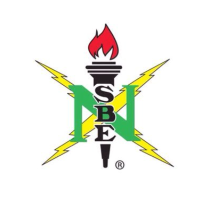

Table Of Contents
On Campus Involvement
Computer Science & Software Engineering Club (Outreach Coordinator) CSSEC Linktree
Participating in CSSEC has been a transformative experience for me. As a student entering the tech industry, I initially found it quite intimidating. I had concerns about understanding the day-to-day realities of working in the field, feeling adequately skilled, and whether I would fit in with my peers. However, during my first meeting, I was introduced to the importance of work-life balance, learned about internship programs tailored to students at my skill level, and began to forge meaningful connections with others. Taking on leadership roles has further boosted my confidence and enthusiasm. This organization and the experiences I've gained through it hold a special place in my heart.
National Society of Black Engineers (National & FGCU Member) FGCU NSBE Instagram
I often reflect on my first meeting with the National Society for Black Engineers (NSBE). Dr. Villiers, NSBE’s advisor, delivered an inspiring speech about overcoming adversity and seizing available opportunities. As a Haitian, his journey resonated with me and inspired to explore learing and professional development opportunities outside the class room. By the end of that meeting and during subsequent NSBE events, I formed amazing connections with students in different engineering disciplines. Engaging with NSBE has helped me see myself, not just as a student refining my academic skills, but as a professional developing the vital abilities needed for success in the workplace. I hope to attend both Fall 2024 and Spring 2025 conferences.
Work Experience
BoomBox Media LLC (Fullstack Developer)

Boom Box has a mission that resonates deeply with my own story. Growing up in a home with music being a center piece of life, I know how a good song at just the right time can truly bring people together. The app is a social solution to the challenges of finding and connecting with like minded people. Working in a Full Stack Development role with minor operations responsibilites, I have collaborated with leadership to deliver a 6-week prototype sprint schedule and presented it to 8 team members, developed social media post and register APIs using Express.js, wrote and optimized basic PostgreSQL queries for retrieving and deleting data from the database and researched and evaluated React components and libraries, including Tamagui and WithFrame, to inform development decisions.
FGCU Cybersecurity Research Lab (Research Assistant)
I was mentored by a researcher while collaborating with 25 students on developing a machine learning model to balance a cyberattack dataset. The FGCU Cybersecurity Research Lab provided invaluable support as we engaged with academic journals and utilized Python along with various data science tools. This experience enhanced my technical skills and deepened my understanding of cybersecurity.
Target Corp. (Tech/Guest Service Team Member)
At Target, I engaged authentically with guests, efficiently managing lines of 2-4 while addressing phone inquiries. This role taught me a great deal about customer service and conflict resolution, as I developed skills to handle challenging situations while maintaining effective communication with leadership when necessary. Additionally, I oversaw break schedules for 4-6 team members, adapting to the dynamic staffing needs of the store. These experiences significantly enhanced my ability to provide exceptional service and work collaboratively within a team.
Certifications
HTML, CSS, and Javascript for Web Developers by Johns Hopkins University

I recently completed Johns Hopkins University's course on HTML, CSS, and JavaScript for Web Developers, where I gained valuable skills in web development. Using my knowledge of Twitter Bootstrap, I built this website, which was an exciting opportunity to apply what I learned. This self-paced learning experience was incredibly insightful, and I am eager to continue my studies, particularly in JavaScript and React, to further enhance my development skills.